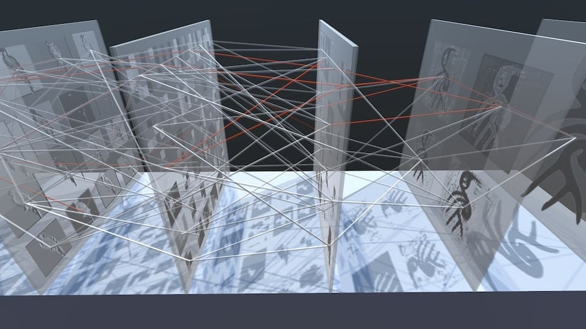

Mingled Sensations in ConvNets
Visualizing latent transitions between symbols and objects in neural networks.
Convolutional Neural Networks
Encoder–Decoder Model
Feature Mapping
AI Visualization
TIME | 2019
AUTHORS | Chen-Hua Lu, Po-Yao Wu, Che-Rung Lee, Su-Chu Hsu
AWARDS | Science Special Award, 2019 Knowledge Taiwan Creativity Award.
FUNDED | Ministry of Science and Technology, Taiwan. (MOST 108-2634-F-007-011)
EXHIBITIONS |
- 2020 Ars Electronica Festival – In Kepler’s Gardens | A global journey, Taiwan.
- 2019 14th Knowledge Taiwan Creativity Award | Taipei, Taiwan

MOTIVATION |
In an era where AI systems increasingly shape cultural and computational imaginaries, this project seeks to reveal the internal perceptual logic of convolutional neural networks (CNNs) through an analog, installation-based form. Rather than showcasing AI’s power or critiquing its social influence, the work exposes the algorithmic architecture of CNNs—the layered transformations, activations, and symbolic abstractions that occur during visual recognition. By designing a model that converts real-world images into corresponding Chinese pictograms, the project highlights how CNNs simulate biological perception: decomposing, abstracting, and reconstituting information across sequential layers. The installation reifies this digital process into physical space, allowing viewers to witness the gradual morphing from object to symbol, and to appreciate the aesthetic and structural beauty embedded within contemporary AI systems.
APPROACH |
The system is built as a six-layer, two-dimensional convolutional neural network implemented in Keras and trained on TensorFlow. Large 9×9 convolution filters are used to accommodate the 256×256 image resolution, while hyperbolic tangent activations preserve intermediate visual fidelity. Dropout layers are inserted after each upsampling stage, and training employs the Adam optimizer (learning rate 0.001, decay 0.000001) for 10,000 epochs with 64 augmented images per batch. The dataset includes bird, fish, and horse images paired with their corresponding Chinese pictograms.

The installation materializes this computational flow through seven transparent acrylic plates, presenting the input image, intermediate activations, and final pictogram. Threads and colored lines between plates visualize learned weights—thicker and redder connections represent stronger activations—transforming the neural network’s abstract architecture into tangible form. This analog–digital hybrid presentation makes visible the inner mechanics of CNN perception and symbol formation.
EXTERNAL RESOURCES |
- Ars Electronica | Tsing Hua Garden | EXHIBITION – Buds about to Blossom
- 「卷積層的千絲萬縷」AI 作品獲「第十四屆李國鼎科技藝術獎」最佳科普獎
- Mingled Sensations in ConvNets｜奧地利林茲國際電子藝術節2020 - 清華園暨15th 李國鼎K.T.科藝獎